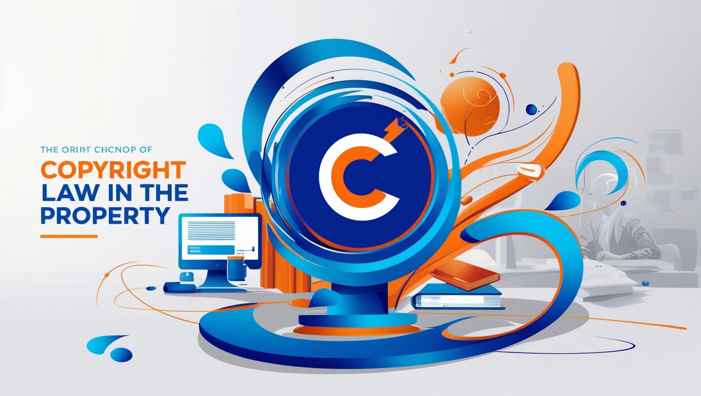

Derechos de Autor
“Sin los derechos de autor, la creatividad no tendría valor en el mercado”.
Primero ¿Qué son los Derechos de Autor?
Los derechos de autor son un conjunto de normas legales diseñadas para proteger las creaciones
originales de los autores. Al garantizar el reconocimiento y los beneficios económicos
para los creadores, los derechos de autor fomentan la creatividad y la innovación en la sociedad.
Muy bien, ahora que sabemos que son, no te has de preguntado ¿Qué Protegen los Derechos de Autor? Bueno los derechos de autor protegen una amplia variedad de creaciones intelectuales, desde las obras literarias y artísticas hasta las más tecnológicas, como el software. Esta protección asegura que los creadores puedan controlar el uso de sus obras y obtener reconocimiento por su trabajo. A continuación, exploraremos los diferentes tipos de obras que pueden estar protegidas:
Ejemplos
Obras literarias
Las obras literarias son algunas de las más comunes bajo la protección de los derechos de autor. Esta categoría abarca:
- Libros y novelas
- Artículos de revistas y periódicos
- Blogs y publicaciones en línea
- Poemas y ensayos
- Guiones de películas, obras de teatro y programas de televisión.
Ejemplo:
Un autor de novela tiene derecho exclusivo sobre su libro. Nadie más puede publicarlo,
traducirlo o distribuirlo sin su permiso.
Consejo:
Recuerda que las ideas en sí no se protegen por derechos de autor, sino la forma en que
esas ideas
se expresan.
Obras artísticas
Las obras artísticas también están bajo la protección de los derechos de autor, y pueden incluir:
- Pinturas, dibujos y esculturas.
- Fotografías
- Diseños gráficos y arte digital.
- Escenografías o decorados
- Cómics y mangas
Ejemplo:
Si un compositor escribe una canción, puede licenciar su obra para que otros la
interpreten,
la graben o la reproduzcan públicamente, recibiendo regalías por el uso.
¿Sabías que? El copyright sobre una canción también puede dividirse en dos partes: uno sobre la composición (letra y música) y otro sobre la grabación de la canción (por ejemplo, la interpretación de un artista).
Software
En el mundo digital, el software es una de las áreas más relevantes protegidas por derechos de autor. Esto incluye:
- Códigos fuente y binarios
- Aplicaciones móviles y programas de escritorio.
- Juegos de video.
- Sistemas operativos y utilidades.
- Bibliotecas y frameworks de programación.
El código fuente de un programa informático está protegido por derechos de autor, lo que significa que sólo el creador o las personas a quienes haya otorgado licencias pueden modificar o restringir el software.
Dato Importante:En el caso de software, el código fuente es lo que se protege principalmente, no la funcionalidad. Por eso, dos programas que hacen lo mismo pueden ser completamente diferentes en su código.
Obras Audiovisuales
Las obras audiovisuales, que combinan imágenes en movimiento con sonido, también están protegidas. Incluyen:
- Películas y documentales
- Programas de televisión y series
- Videos musicales.
- Cortometrajes y animaciones.
- Publicidad y comerciales.
Un director de cine tiene los derechos exclusivos sobre su película, desde la distribución en cines hasta la transmisión en plataformas de streaming.
Dato Curioso:Cuando se realiza una obra audiovisual, hay varios tipos de derechos involucrados: los derechos sobre el guion, la música, la actuación, la dirección y la producción.
Derechos de Autor en el Mundo Digital y Duración
El entorno digital ha transformado la forma en que interactuamos con las obras protegidas por derechos de autor, pero también ha creado desafíos únicos relacionados con su protección y uso. Esta sección aborda cómo los derechos de autor se aplican en el contexto digital. Retos Actuales en el Mundo Digital
-
Piratería Digital:
-
Plataformas de Contenido Generado por Usuarios:
-
Copias y Distribución Ilícita de Software:
- La distribución no autorizada de películas, música, software y libros
electrónicos
afecta enormemente a los creadores y la industria.
Ejemplo: Plataformas de torrents o sitios de streaming ilegales que comparten contenido sin licencia.
- YouTube, TikTok y otras plataformas deben equilibrar la libertad creativa con la
protección de derechos de autor.
Herramientas como Content ID en YouTube ayudan a detectar y gestionar el uso no
autorizado de contenido.
- La piratería de software genera pérdidas millonarias. Los derechos de autor
protegen
tanto el código fuente como la interfaz del programa.
Creative Commons: Una Alternativa para Compartir
Obras
Creative Commons (CC) es un sistema de licencias que permite a los autores compartir
sus obras bajo ciertos términos, manteniendo sus derechos.
Ejemplo: Un fotógrafo puede usar una licencia CC que permita a otros usar su
foto, pero solo con atribución y para fines no comerciales.
Términos Frecuentes de Licencias CC
- Atribución (BY): Reconocer al autor original.
- No Comercial (NC): Prohibido usar la obra con fines comerciales.
- Sin Derivadas (ND): No se permiten modificaciones a la obra.
- Compartir Igual (SA): Las obras derivadas deben tener la misma licencia.
Ejemplo Visual:
Una tabla o gráfico que explique las combinaciones posibles de las licencias
Creative Commons.

La duración de los derechos de autor varía según el país y el tipo de obra, pero la mayoría de las legislaciones se basan en principios comunes establecidos por tratados internacionales, como la Convención de Berna. A continuación, se presentan los aspectos clave:
Duración General
-
Vida del autor + 70 años:
En la mayoría de los países (incluyendo México), los derechos de autor permanecen
vigentes durante toda la vida del autor y 70 años después de su muerte.
Ejemplo: Si un autor fallece en 2000, los derechos sobre su obra expirarán en 2070, entrando entonces al dominio público.
Excepciones para Obras Específicas
-
Obras anónimas o seudónimas:
-
Obras corporativas o de encargo (como software):
-
Obras audiovisuales:
- La protección dura 70 años desde la fecha de publicación, a menos que la
identidad
del autor se revele.
- En muchos países, la protección dura entre 50 y 70 años desde la fecha de
publicación o creación.
- >Usualmente, se protegen durante 70 años después de la muerte del último
contribuyente principal (director, guionista, compositor, etc.).
Dominio Público
Cuando los derechos de autor expiran, la obra pasa al dominio público. Esto significa que cualquier persona puede usarla sin necesidad de autorización.Ejemplo: Obras de autores como William Shakespeare o Beethoven están en el dominio público y pueden ser adaptadas libremente
¿Por qué la Duración Varía?
Tratados internacionales: Países que siguen la Convención de Berna adoptan normas comunes, pero las leyes locales pueden extender la duración. Evolución tecnológica: La duración ha cambiado a lo largo del tiempo para adaptarse a nuevos formatos y medios de creación.¿Qué No Está Protegido?
Es importante aclarar que no todo está cubierto por los derechos de autor. Por ejemplo:- Ideas y conceptos abstractos: No se protegen las ideas como tales, sino su expresión concreta.
- Hechos y datos: Los hechos, como un descubrimiento científico, no son protegidos por derechos de autor, pero la forma en que se presenten (como en un artículo) sí puede serlo.
- Métodos y procesos: Un método o proceso de hacer algo no se cubre, aunque la descripción o el diseño de ese proceso sí pueda estar protegido.